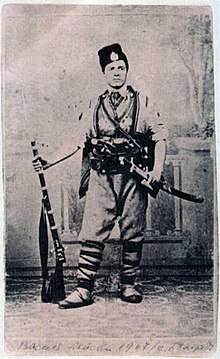
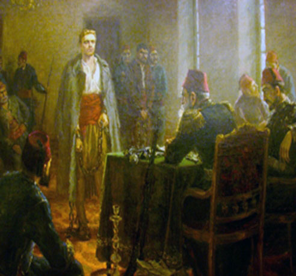

Васил Левски, чиято отдаденост и саможертва в името на свободата е най-силното човешко качество.
Според повечето източници Васил Иванов Кунчев е роден на 18 юли 1837 г. в Карлово. По-нови изследвания обаче сочат, че е роден на 18 юли 1840 г. Син е на Иван Кунчев Иванов и Гина Василева Караиванова. Родителите му имат пет деца – Христо, Васил, Петър, Яна и Марийка.
През март 1867 заминава за Букурещ, за да се включи в подготовката на революционната акция, замислена от Георги Раковски. По негово предложение е определен и включен като знаменосец в четата на Панайот Хитов, която се подготвя за прехвърляне в България. Заедно с четата изживява всички трудности и разочарования по време на нейния 99-дневен поход в Балкана (28 април-4 август). Заедно с четата преминава в Сърбия и известно време остава в гр. Княжевац. През август и септември 1867 г., заедно с Панайот Хитов и Иван Кършовски, живее в Белград, където постъпва във Втората българска легия (1867 – 1868).

На 27 декември 1872 г. е заловен от турските заптиета в Къкринското ханче. Общо 15 заптиета,
начело със старшия им – Юсеин Бошнак чауш, обграждат рано сутринта ханчето,
Васил Левски е съден по няколко обвинения. Присъдата на Левски – смърт чрез обесване.
На 6/18 февруари 1873 г. присъдата е изпълнена в околностите на София. Мястото на обесването
на Васил Левски се намира в центъра на днешна София, близо до мястото, където е издигнат
негов паметник.
В последните си мигове се изповядва пред архиерейския наместник на София – отец Тодор Митов.
В изповедта си казва:
„ Каквото съм правил, в полза народу е “
